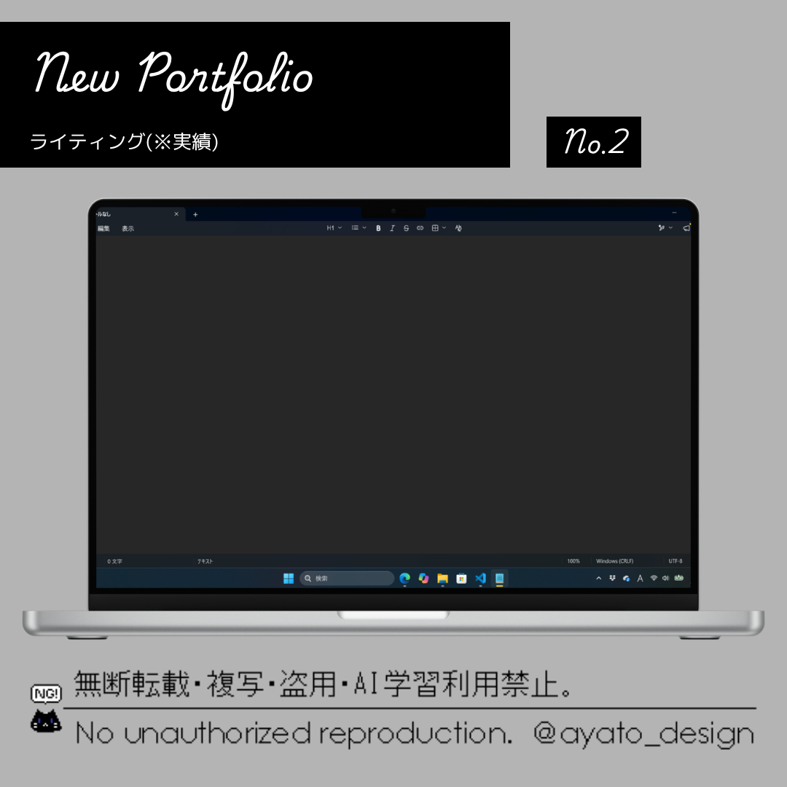

ライティング
Tag
- Clientwork
- Copywriting
クラウドワークスにてテストライティングを作成しました。
特に細かい指定がなく、自由だったので伸び伸びと書く事が出来ました。
テーマ
日常生活で取り入れているちょっとした節約の工夫
文字数
100文字程度
ライティング本文
私が実践している節約方法は、電車を利用するときに1駅分歩くことです。
運動不足が気になっていたこともあり、交通費の節約と運動不足の解消ができて一石二鳥だと思い始めました。
無理のない範囲で歩くようにしていますが、意外と気分転換にもなり、今ではちょっとした習慣になっています。
制作時間：約5分
制作ツール：メモ帳
完成日：2026.11.14